Contact
Let's work together
For new opportunities and collaborations. Feel free to reach out or just want to connect.
App designed to streamline workflows and enhance communication for doctors within hospital
The Doctors EMR App is envisioned as a comprehensive digital tool designed to streamline workflows and enhance communication for doctors within hospital settings. The core idea revolves around enabling seamless digital interaction between doctors, patients, staff, and colleagues. The app aims to facilitate efficient tracking of patient health conditions and medication, providing doctors with up-to-date information to improve patient care. Its user-friendly interface prioritizes simplicity and quick access to crucial data.
My Role: I was part of the project as a Lead product designer and was responsible for UX/UI Design.
Collaboration: Business Stakeholder, Project Manager, Team Lead, and Dev team.
Tools: Sketch, Invision, Jira, MS Teams

Potential group of users involved in this process.
The project was started to solve real pain points doctors faced with outdated systems and scattered communication.
To gain comprehensive insights, a multi-faceted user research approach was employed:
We had in-depth, semi-structured chats with a mix of medical staff to understand their day-to-day work, the pain points they face with current systems (like paper records and EMRs), where was lack of communication, and what they’d want in an ideal solution.
We also spoke with key stakeholders get a broader perspective on app's approach. These conversations helped us understand things like business priorities, tech limitations, data security worries, and how the app could improve hospital efficiency and patient care.
We reviewed some of the EMR systems and healthcare apps available, where they fall short, and how we could stand out. These insights helped guide our design decisions and made sure the Doctors EMR App brought something fresh and valuable to the table.
Based on our research findings, we started on the ideation to create IA, wireframes and visual design. We iteratively refined these designs through multiple feedback sessions with stakeholders and users.
I created a journey map outlines the typical day of a staff and how they manage their daily tasks and patient care.
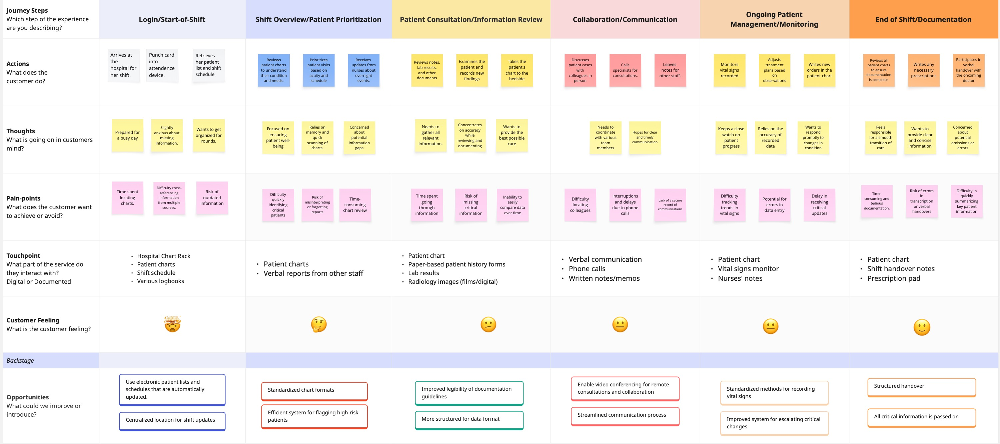
We started with a strong focus on addressing the pain points identified through user research, incorporating features such as:
I created an information structure for the app to have a high level idea. Main goal here is to make simple and intuitive structure to navigate.
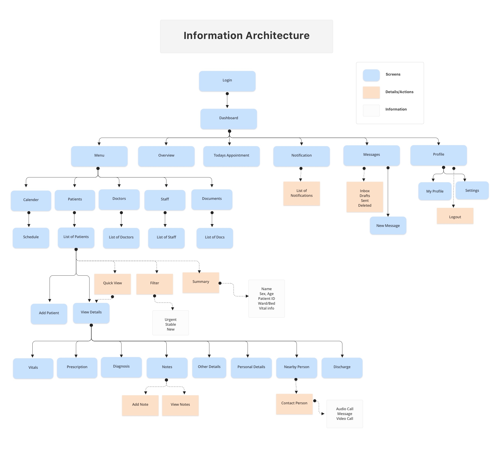
The wireframing and visual design processes were heavily influenced by user feedback, with iterative design and usability testing planned to ensure the app meets the needs and expectations of the target users. The focus is on creating an intuitive, efficient, and visually appealing interface that supports seamless workflows.
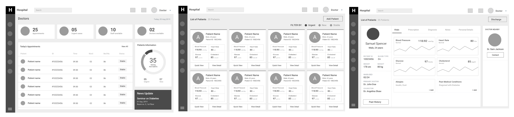
The app will provide all important information related to doctors daily schedule of dashboard. A clear insight will provide doctor to take decision quickly.
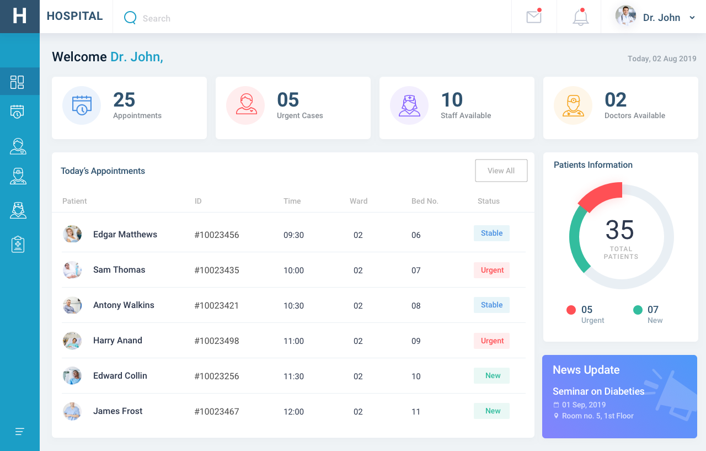
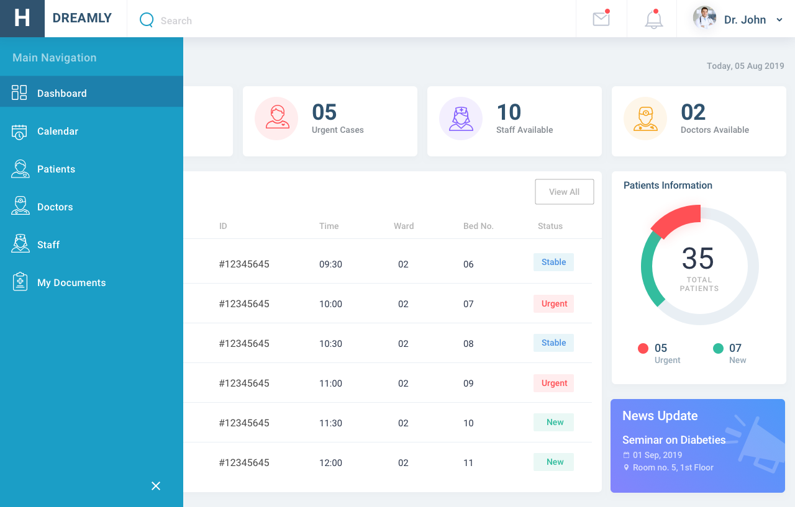
Patients are the imperative to any doctor. This screen will provide insight of all available patients.
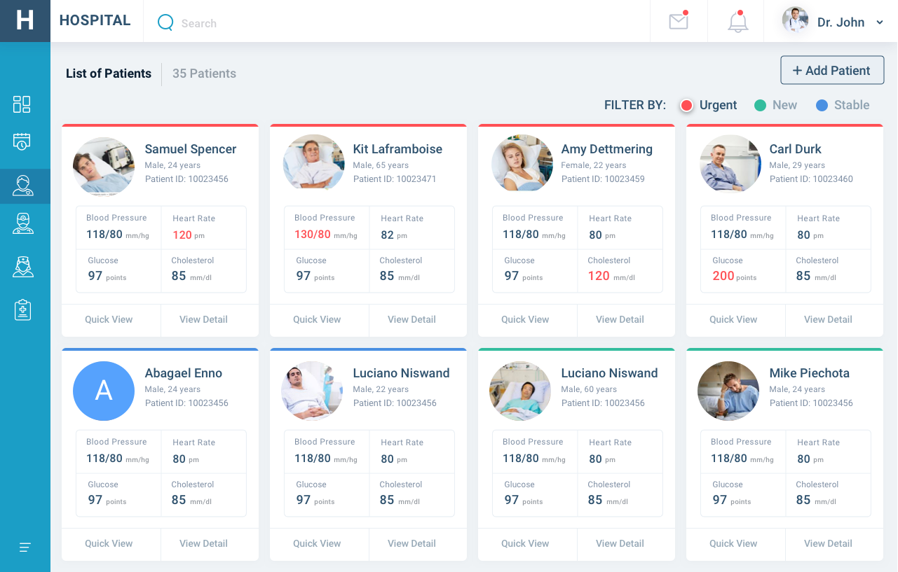
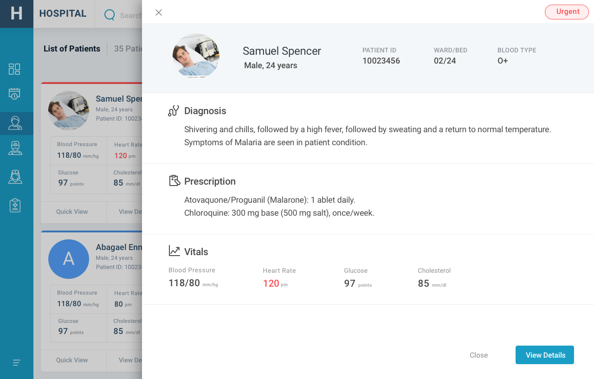
Patient quick view will allow the doctor to get a quick insight about the patient's condition without leaving the current screen.
If case more information is needed, doctor can visit detail page to get full information about patient. All information related to patient will be available in this section and easy to access. Tabs are introduced to navigate between different section.
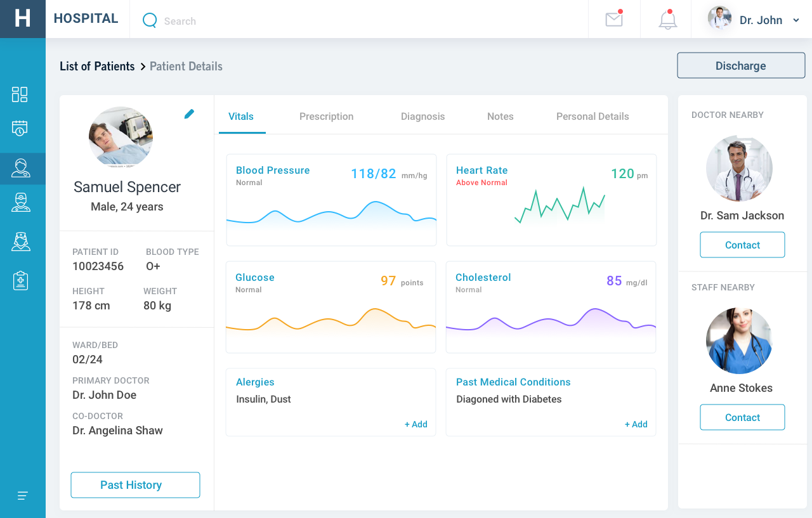
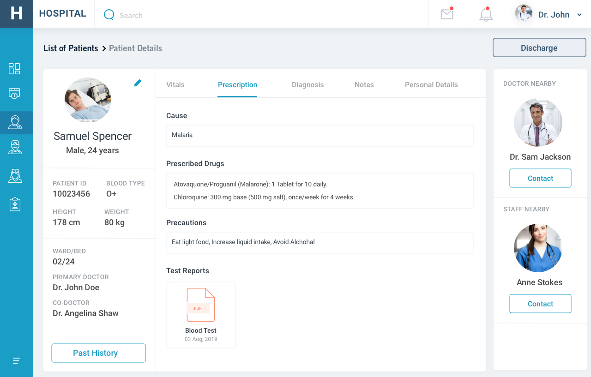
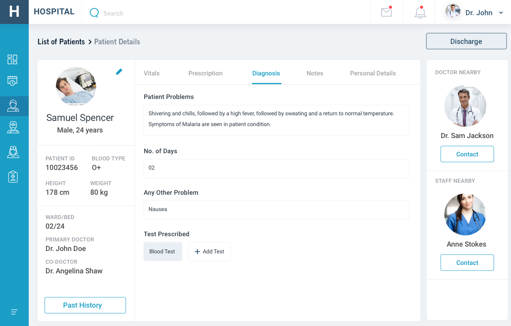
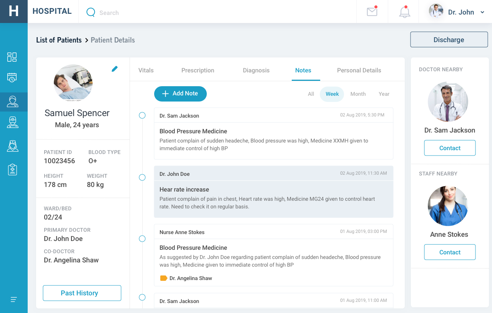
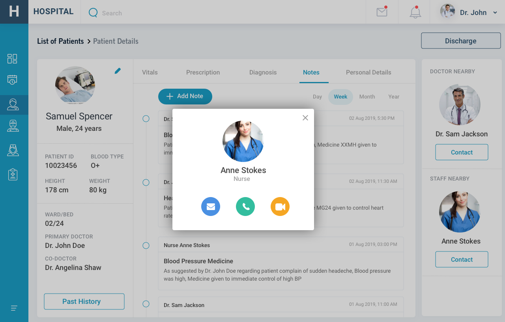
If a patient is attended by different doctors or staff. In order to pass information to fellow members Notes could be used.
If a doctor is physically not available with patient and want to check with the patient, they can check the staff or doctor available nearby with that patient. Doctor could simply call them or message them from this particular screen.
Keeping track of all activities and information is a good practice. In case there is any confusion user can check from messages section about past conversation and also send a new message to fellow members.
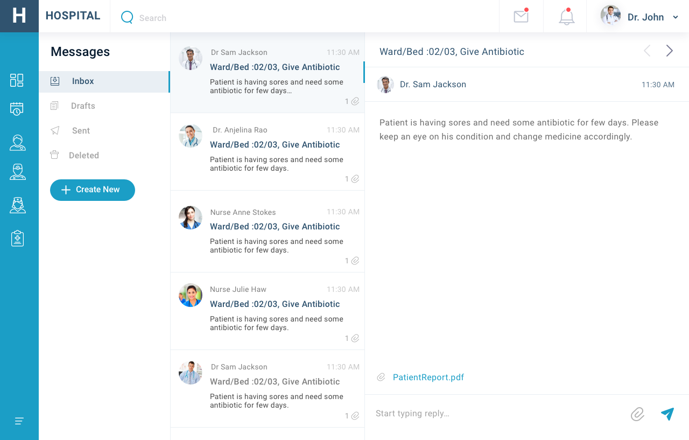
Details of all activities in particular time slot. Check all upcoming or past appointments on single screen. Also option to add any new task to particular day/time.
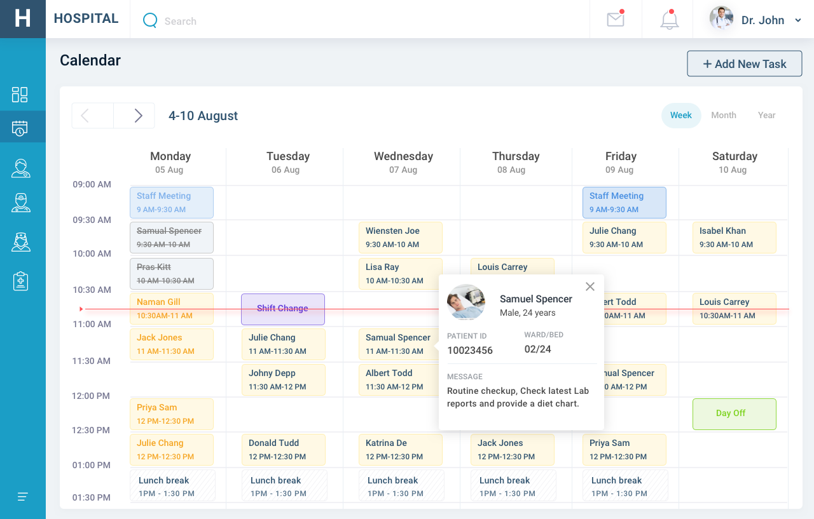
The Doctors EMR App is being developed with a deep understanding of the challenges and needs of healthcare professionals, gained through comprehensive user research. By directly addressing the identified pain points with a user-centric design approach, the app aims to be a valuable tool that enhances efficiency, improves communication, and ultimately contributes to better patient care within the demanding healthcare environment. The emphasis on seamless integration, robust security, and intuitive usability will be critical for successful adoption and long-term value.
For new opportunities and collaborations. Feel free to reach out or just want to connect.